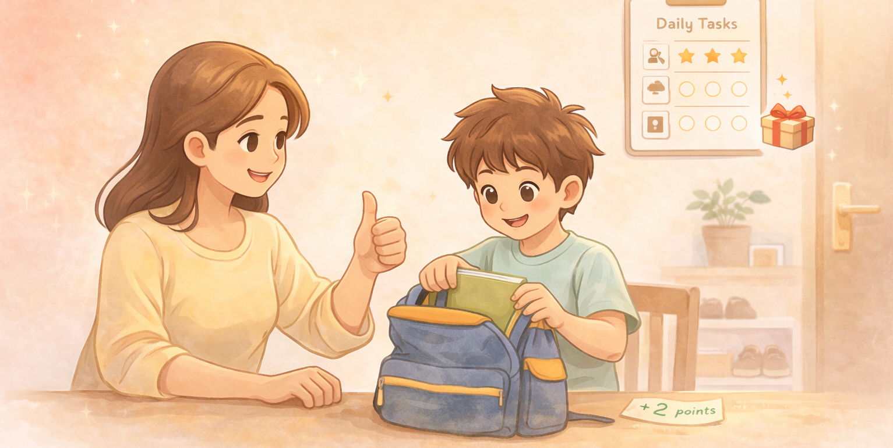

A kids rewards system that actually sticks
Track routines, and reward the moments that matter: helping out, good attitude, trying hard.
Built for real families
No complicated setup. Just routines, points, and rewards — the modern star chart for home.
Chores and habits in one place
Set up routines like homework, reading, brushing teeth, packing school bags, or helping with dishes. Check off tasks daily and keep it consistent.
Points that motivate
Assign points to tasks, and award extra points anytime for good behaviour. Kids can see progress clearly, and a points history keeps it fair and clear.
Flexible rewards
Create rewards that match your family values — screen time, bedtime stories, small treats, or experiences. Let kids redeem rewards and feel ownership.
How it works
Start in minutes and keep it going daily.
Set up
Add your child and pick the routines you want to build.
Track
Kids complete tasks. You award points. Progress becomes visible.
Reward
When enough points are earned, let kids redeem a reward.
Download Family Star
A simple kids rewards app for chores, routines, and rewarding good behaviour.

Why a kids rewards system works
Most parents don’t need more parenting theory. You need something that works on busy weekdays, when everyone is tired and you still have to get through homework, dinner, and bedtime. That’s where a simple chore chart and habit tracker helps, especially when it is paired with points and rewards, and you can also award points for good behaviour in the moment.
Family Star is basically the digital version of a classic star chart, with two upgrades: it’s faster to use, and it makes progress obvious. It also lets you reward the “small wins” that don’t fit neatly into a task list, like kindness, effort, and a good attitude. Kids respond well when expectations are clear, and when the payoff is consistent. When you turn routines into a game (earn points, save up, redeem rewards), you remove a lot of daily friction. You’re no longer negotiating every single task. You’re just following a simple system.
What to track (good starters)
- Morning routine: make bed, brush teeth, pack bag
- School routine: homework, reading, spelling practice
- Home routine: tidy toys, help with dishes, feed a pet
- Boundaries: screen time limits, bedtime routine, device charging
The best routines are the ones you can repeat every day without needing extra willpower. Keep tasks small. If you want to build a bigger habit (like “study for 45 minutes”), split it into smaller tasks (10–15 minutes) and reward consistency. That’s how habits stick.
Picking rewards that don’t backfire
Rewards don’t have to be expensive. In fact, “money rewards” can sometimes create more bargaining. The strongest rewards are usually experiences or privileges that fit your family: choosing a movie, extra story time, picking dinner, small treats, or planning a family activity. Make rewards visible so kids know what they are working toward.
If your child loses motivation quickly, the reward is probably too far away. Use a mix of short-term rewards (quick wins) and long-term rewards (bigger goals). Over time, you can reduce the reward frequency once the routine becomes automatic.
Why this helps parents too
A good rewards system isn’t only about kids. It helps parents stay consistent. When rules are fuzzy, parents end up repeating themselves, and kids start testing boundaries. When the system is clear, everyone knows what “counts” and what doesn’t. You spend less time reminding, and more time enjoying the moments that matter.
Frequently asked questions
What’s the difference between a chore chart and a habit tracker?
A chore chart usually tracks household responsibilities (like tidying toys or feeding a pet). A habit tracker focuses on repeating behaviours (like reading daily). Family Star supports both, so you can track routines in one place.
What age is this best for?
Most families find points and rewards work best when kids are building daily routines and still need structure. Start simple, then adjust tasks and rewards as your child grows.
How many points should I give for each task?
Keep it predictable. Easy tasks can be 1–2 points. Bigger tasks can be 5–10 points. What matters is consistency, not “perfect math”. If kids lose interest, shorten the distance to a reward.
Can I award points for good behaviour, not just tasks?
Yes. On top of points earned from daily tasks, you can also award extra points anytime for good behaviour — for example helping out, showing a good attitude, or trying hard.
Do I need to use rewards forever?
No. Points and rewards are training wheels. Once a routine is stable, you can reduce rewards and keep the routine itself. Many families keep rewards for a few key behaviours and drop the rest.